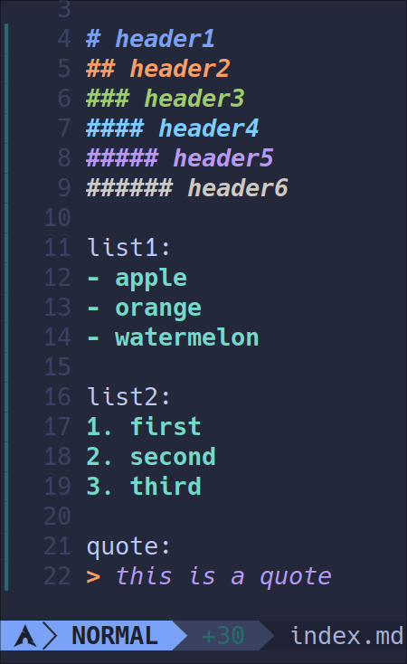

eye candy也是一种生产力!
动机
treesitter为neovim带来了语法高亮, 让不同语言都被解析成统一的语法树, 并对语法树上的不同部分进行样式的定义. 然而, neovim treesitter对markdown的默认解析方式和高亮模式过于简陋, 不同层级的标题采用的是统一的样式, 列表也仅有开头采用了高亮. 这对于日常使用neovim来编辑markdown的人十分不友好, 于是我花了一点时间了解了一下treesitter的高亮过程, 并最终形成了自定制的漂亮样式.
这是原来的

这是自定义后的

步骤
-
复制neovim treesitter插件自带的markdown
highlight.scm文件, 由于我使用的插件管理器是lazy, 因此该文件位于~/.local/share/nvim/lazy/nvim-treesitter/queries/markdown/highlights.scm -
进入你的配置文件目录
~/.config/nvim, 创建~/.config/nvim/queries/markdown/highlights.scm, 没有目录就创建一下, 将第一步复制的文件内容复制到这里来 -
对
~/.config/nvim/queries/markdown/highlights.scm进行自定义修改, 在这里贴出我的;From MDeiml/tree-sitter-markdown ; (atx_heading (inline) @text.title) ; (setext_heading (paragraph) @text.title) ; [ ; (atx_h1_marker) ; (atx_h2_marker) ; (atx_h3_marker) ; (atx_h4_marker) ; (atx_h5_marker) ; (atx_h6_marker) ; (setext_h1_underline) ; (setext_h2_underline) ; ] @punctuation.special [ (atx_heading (atx_h1_marker)) ] @text.title1 [ (atx_heading (atx_h2_marker)) ] @text.title2 [ (atx_heading (atx_h3_marker)) ] @text.title3 [ (atx_heading (atx_h4_marker)) ] @text.title4 [ (atx_heading (atx_h5_marker)) ] @text.title5 [ (atx_heading (atx_h6_marker)) ] @text.title6 [ (link_title) (indented_code_block) (fenced_code_block) ] @text.literal (pipe_table_header (pipe_table_cell) @text.title) (pipe_table_header "|" @punctuation.special) (pipe_table_row "|" @punctuation.special) (pipe_table_delimiter_row "|" @punctuation.special) (pipe_table_delimiter_cell) @punctuation.special [ (fenced_code_block_delimiter) ] @punctuation.delimiter (code_fence_content) @none [ (link_destination) ] @text.uri [ (link_label) ] @text.reference [ (thematic_break) (list (list_item (list_marker_minus) (paragraph (inline)))) (list (list_item (list_marker_plus) (paragraph (inline)))) (list (list_item (list_marker_star) (paragraph (inline)))) (list (list_item (list_marker_dot) (paragraph (inline)))) (list (list_item (list_marker_parenthesis) (paragraph (inline)))) ] @punctuation.special2 (task_list_marker_unchecked) @text.todo.unchecked (task_list_marker_checked) @text.todo.checked (block_quote) @text.quote [ (block_continuation) (block_quote_marker) ] @punctuation.special [ (backslash_escape) ] @string.escape ([ (info_string) (fenced_code_block_delimiter) ] @conceal (#set! conceal "")) (inline) @spell -
前往
~/.config/nvim/ftplugin/markdown.lua文件, 为新增加的节点定义高亮样式, 我的该文件内容如下, 读者可以自行修改颜色vim.opt_local.expandtab = true vim.opt_local.shiftwidth = 4 vim.opt_local.tabstop = 4 vim.opt_local.softtabstop = 4 vim.opt_local.foldmethod = "expr" vim.opt_local.foldexpr = "nvim_treesitter#foldexpr()" vim.api.nvim_set_hl(0, "@text.title1", {fg="#7aa2f7", bold=true, italic=true}) vim.api.nvim_set_hl(0, "@text.title2", {fg="#ff9e64", bold=true, italic=true}) vim.api.nvim_set_hl(0, "@text.title3", {fg="#9ece6a", bold=true, italic=true}) vim.api.nvim_set_hl(0, "@text.title4", {fg="#7dcfff", bold=true, italic=true}) vim.api.nvim_set_hl(0, "@text.title5", {fg="#bb9af7", bold=true, italic=true}) vim.api.nvim_set_hl(0, "@text.title6", {fg="#cfc9c2", bold=true, italic=true}) vim.api.nvim_set_hl(0, "@text.quote", {fg="#bb9af7", bold=false, italic=true}) vim.api.nvim_set_hl(0, "@punctuation.special2", {fg="#73daca", bold=true, italic=false})
End